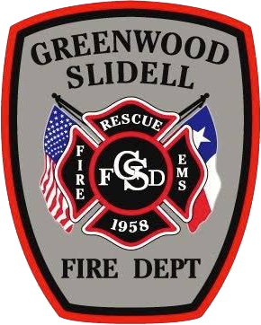

Firefighter & EMS Training Library
Everything for Firefighter I and II and first responder EMS in one place: the taskbook, the instructor guides, the lecture slides, the SFFMA skill sheets and the Wise County protocols.

Everything for Firefighter I and II and first responder EMS in one place: the taskbook, the instructor guides, the lecture slides, the SFFMA skill sheets and the Wise County protocols.
NFPA 1010 (2024) Chapters 6 and 7
FF I and FF II lectures
Wise County First Responder protocols
NFPA 1001 (2019) skill sheets
Everything opens right here, on any phone or computer, with no sign-in. Each document has a menu to jump to a section, skill or slide.
Loading…